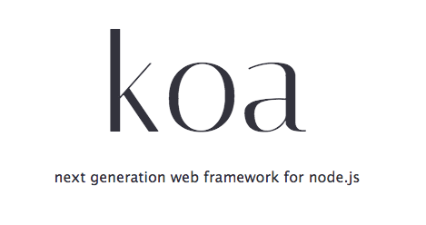

Convention vs.
Configuration
Why your opinionated friends might be better for you.Jimmy Cann - @yjimk

FRAMEWORKS



Frameworks Are Controversial
Code is like love.
It is created with clear intentions, but quickly gets complicated.

==
(See what they did there?)

==
==
Connect
(What? No logo?)==
==
Connect
If Sails is just like Express
Why can't I just use Express and configure it how I want?
Install
$ yarn add sails global
// For our NPMers
$ npm i -g sails
$ sails new my_sails_project
$ cd my_sails_project
$ sails lift
# Alternatively
$ node app.js
Anatomy
/api/models
/views
/api/controllers
/api/services
/config/routes
/config/policies
/config/http
/assets
Database / ORM
(It's OK, I suppose)

Disabling Waterline
and installing Sequelize
In project root, amend/create '.sailsrc'. You can also disable Grunt here
{
"hooks": {
"grunt": false,
"orm": false,
"pubsub": false
}
}
Install the Sequelize lib and Sails hook
$ yarn add sequelize sails-hook-sequelize
Check out https://github.com/festo/sails-hook-sequelize
Community

Performance
"express": {
"HelloWorld": {
"name": "express/HelloWorld",
"href": "http://localhost:8001/hello",
"hz": 117.92009586903794,
"isSlowest": true
},
"GET_user": {
"name": "express/GET_user",
"href": "http://localhost:8001/user",
"hz": 142.22563563747755,
"isFastest": true
},
"isSlowest": true
},
"sails": {
"HelloWorld": {
"name": "sails/HelloWorld",
"href": "http://localhost:1337/hello",
"hz": 121.46556906005706,
"isFastest": true
},
"GET_user": {
"name": "sails/GET_user",
"href": "http://localhost:1337/user",
"hz": 95.75379233373307,
"isSlowest": true
},
"isFastest": true
}
Security
Documentation
wat?
Coding Experience
In conclusion...
Thanks for listening!
Jimmy Cann
@yjimk